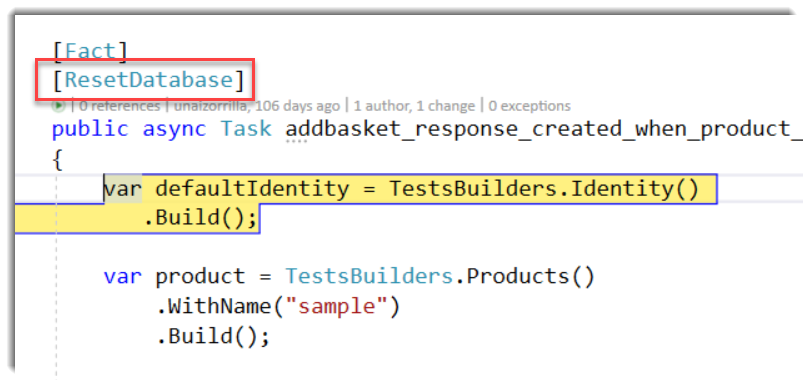
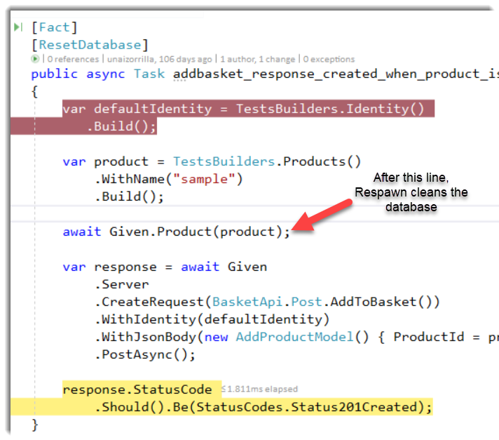

I’m not a huge fan of when anything that returns Task has the async suffix, but if I’m honest, sometines it can help you to avoid some strange behaviours.
Last week, I was delivering a workshop about how to test ASP.NET Core HTTP API’s effectively. We talked about strategies for isolating databases in tests in order to avoid shared state between them. My approach is to always reset the database before each test. In order to facilitate this job, I use Respawn an amazing library created by Jimmy Bogard that helps us to reset test databases to a clean state.
To use Respawn you must create a Checkpoint and initialize with some configuration, depending on what you want to do: tables to skip, reseed, schemas to keep or skip, etc. I usually create a static method called ResetDatabase in my xunit fixtures as shown in the following code:
public static void ResetDatabase()
{
var configuration = CreateTestConfiguration(
new ConfigurationBuilder()).Build();
_checkpoint.Reset(
configuration.Get<ConnectionStrings>().DefaultConnection);
}
Put attention at the Reset method, later we’ll talk about it.
Then, I create a xunit attribute to decorate tests that depends in the database and I want to clean before it executes:
public class ResetDatabaseAttribute : BeforeAfterTestAttribute
{
public override void Before(MethodInfo methodUnderTest)
{
ServerFixture.ResetDatabase();
}
}
If you want to learn deeper about effective testing of HTTP APIs in .NET Core, I recommend you to visit our Github repo. We are going to translate all the documentation to English.
When I was doing the demo, something strange happened: the database wasn’t reseting before the test execution. This wasn’t the expected behaviour, we wanted reset the database before each test (run in isolation). It wasn’t the first time happended to me, I remembered that one day speaking in a conference it happened again.
The problem
The Reset method is asynchronous and during my demo I forgot to use await clause, so when the Visual Studio debugger stops in the first breakpoint the database hadn’t been cleaned as you can see in the images below:


During the execution, when some async/await Task executes, then Reset method was called:

When our test is executing, our database has a previous state (Not complaying the rule of run in isolation) so if possible to have an unwanted results, sometimes tests pass and sometimes not. This an annoying behaviour can make us to waste lot of time, for this reason sometimes it’s good to see the async suffix.
To fix this, I changed the ResetDatabase method to wait the Task:
public static void ResetDatabase()
{
var configuration = CreateTestConfiguration(
new ConfigurationBuilder()).Build();
_checkpoint.Reset(
configuration.Get<ConnectionStrings>().DefaultConnection).Wait();
}
If the Reset method had the async suffix maybe I wouldn’t have forgotten adding await before the method.
My two cents.


Comments